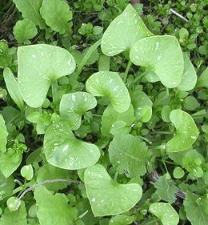

Native to the coastal and mountain regions of western North America, from the southern tip of Alaska south as far as Central America, this plant is most common in California, particularly the Sacramento and San Joaquin valleys. It appears in the spring, preferring cool moist ground, and starts to dry out in the early summer. It is easily recognizable by the completely round leaves with flower spikes extending from the center. This is actually formed by two opposed leaves fused together at their edges and appears only under the flower head. The regular leaves are spade shaped.
This herb was much used by gold rush miners who ate it to ward off scurvy (man cannot live by sourdough bread and salt pork alone). Today it is used raw in salads and sometimes cooked as spinach would be. It has a somewhat spinach-like taste. Photo by Curtis Clark distributed under license Creative Commons Attribution Share-Alike v2.5.
More on Purslane and
Carnations.

The photo to the left shows basal leaves of a miner's lettuce plant. Later
leaves may be very elongated ovals, then it sends up a flower stalk
with the disk leaves (two leaves fused together around the flower stem).
Photo by Curtis Clark distributed
under license
Creative Commons Attribution Share-Alike v2.5.